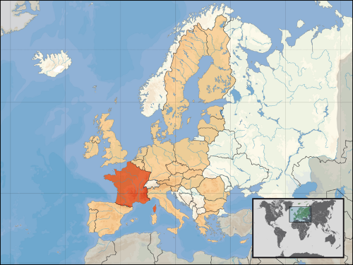

Franța (franceză France, /fʁɑ̃s/), oficial Republica Franceză (franceză: République française, /ʁepyblik fʁɑ̃sɛz/) este o țară situată în Europa de Vest (Franța metropolitană), care cuprinde și diverse insule și teritorii situate în alte părți ale planetei (Franța de peste mări).
Dintre marile state europene, Franța este cel mai vechi stat constituit în jurul unui domeniu regal, inițial organizat în jurul regiunii Île-de-France a cărei capitală este Parisul. Franța este membră a Consiliului Europei, membră fondatoare a Uniunii Europene, a zonei Euro și a Spațiului Schengen. Este de asemenea unul din membrii fondatori ai Organizației Națiunilor Unite și unul din cei cinci membri permanenți ai Consiliului de securitate ONU.

Face parte și din Uniunea Latină, Organizația Internațională a Francofoniei și din G8.
Republica Franceză este un stat unitar fiind o democrație organizată ca o republică semi-prezidențială. Este o națiune dezvoltată având cea de-a cincea economie mondială în 2008. Valorile pe care aceasta le apără și de care se simte foarte atașată sunt exprimate în Declarația Drepturilor Omului și ale Cetățeanului.
Din punct de vedere militar Franța este membră a NATO (din ale cărui structuri militare s-a retras în 1968 pentru a reveni parțial în 2002) și este una din cele șapte țări deținătoare în mod oficial ale bombei atomice. Este considerată una dintre marile puteri de după cel de al Doilea Război Mondial.